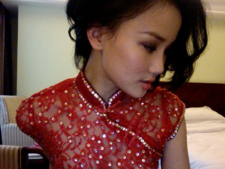

从小就觉得旗袍是最漂亮的衣服，小时候经常称妈妈不在家，和表姐两个人把妈妈的旗袍拿出来穿，那时的我穿着妈妈的旗袍就不能走路了，太长了，每次都要站在小凳子，那时的姐姐很胖，每次偷穿时都会听布料被撕裂的声音，直到有一次撕裂到终于被妈妈发现...16岁的时候，我在上海的某市场买来一件45元的旗袍，做工很粗糙，很多线头都露在外面，但是颜色是我最喜欢的中国红，而且是蕾丝的，关键是便宜，当天买回家就穿着她对着镜子又唱又扭...第二天早晨醒来，看到妈妈坐在桌前缝衣服，走过去一看，原来是昨日买的旗袍，妈妈正在一一针一线的往旗袍上缝珠片，原来只是简单的中国红上缝满了漂亮的珠片，妈妈缝了一个晚上，她说：昨天看着你对着镜子臭美的时候，就想起自己年轻时候也自己给自己做旗袍时买过许多珠片，也许能让这个45元的旗袍更漂亮些，你那么爱唱歌，以后有机会做歌手，就可以穿啦...
发第一张唱片的时候，妈妈好希望我可以穿这件旗袍，可我因为要配合专辑的宣传没有穿555555，让妈妈小失望了一下，之后也一只没有怎么穿过，其他穿旗袍的演出很多都是一些品牌的赞助...今天录制cctv中华情节目，终于有机会穿着妈妈给我做的旗袍站在舞台上唱着上海老歌了，在这个特别的日子－母亲节再合适不过啦，妈妈现在应该在打麻将，妈妈节日快乐：）
